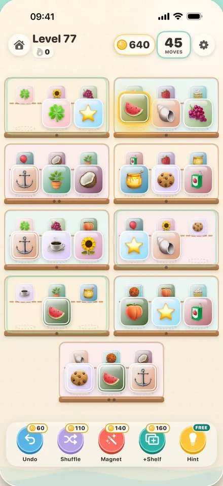

Sortwick › Sorting games guide
Sorting games: how goods sort puzzles work, and how to beat the hard levels
Sorting games, also called goods sort or triple match games, are tidy little puzzles: shelves full of mixed goods, and one job, which is to bring three of a kind together. This page explains how the genre works, gives eight tips for hard levels, and says plainly how Sortwick, our own goods sort puzzle for iPhone and iPad, differs from the usual rules.
What is a goods sort game?
A goods sort game is a puzzle where shelves hold mixed items and you move them, one at a time, until three identical items sit together. The three clear, the space opens up, and you win when every shelf is empty. The same idea is sold as goods sorting, triple match, match 3 goods or shelf sorting.
Are goods sort games the same as match 3 games?
No. In a classic match 3 you swap neighbouring tiles on a grid and new tiles fall in. In a goods sort game nothing falls in at random: the level is a fixed set of goods, and the puzzle is the order in which you move them. It is closer to solitaire than to a slot machine.
How a level works
Each shelf has a few slots. You tap an item, then tap a shelf with a free slot, and the item moves there. When three identical items share a shelf they clear. In most games of this kind a shelf also has rows behind the front one: clear the front row and the next row slides forward, so part of the puzzle is hidden until you dig for it. A level ends when the board is empty, or when you run out of whatever the game limits: time in many goods sort games, moves in Sortwick.

Eight tips for hard sorting levels
- Read the back rows first. The small items peeking out behind the front row tell you what arrives next. Decide what to clear by what it uncovers.
- Keep one slot free. A full board has no moves. Treat an empty slot as your workbench and get it back as soon as you have used it.
- Finish pairs before you start new ones. Two of a kind on one shelf are one move from a clear. Scattering singles across shelves is how boards lock up.
- Clear a whole shelf early. An empty shelf is three free slots, and it makes every later move cheaper.
- Count before you move. If a triple needs four moves and another needs two, the cheap one first usually opens the expensive one.
- Chain your clears. In Sortwick, clears made back to back build a combo. Line up two or three triples, then cash them in one after another.
- Learn each obstacle once. Ice, locks, chains, crates and fog all have one rule each. Sortwick shows the rule on the level's own goods before your first move; read it, it is short.
- Save boosters for the last third. Undo, Shuffle and Magnet help most when few moves are left and you can see the whole problem.
How Sortwick's rules differ
- Moves, not a countdown. Most levels are limited by moves. Only the occasional Rush level runs on a clock.
- Every level is solvable. Levels are checked for a solution, and purchases never change a level's solution.
- No forced ads in the first 100 levels, and never an ad after a loss. Reward videos are always your choice.
- A town to restore. Wins earn stars that rebuild Saltwick, a seaside town whose residents move back in and talk to you.
- Plays offline, with no account, in a download of about 25 MB.
- Tricks arrive one at a time: cracked shelves, chutes, carousels, counters, blizzards and order tickets, each introduced on its own.
Questions
Can I play sorting games offline?
It depends on the game. Sortwick plays offline: levels, the town and your progress need no internet and no account.
Which sorting game has no timer?
Sortwick limits most levels by moves instead of a countdown, so you can stop and think. Only its occasional Rush levels run on a clock.
Sortwick is free on the App Store for iPhone and iPad.